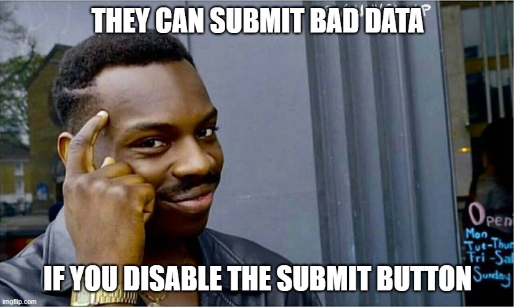

Week 10 Notes
Form Validation
Form Validation is something I covered a few weeks ago in Back End development and while it is possible to bypass in front end that doesn't mean that one should ignore it. Front end validation is a front line way to make sure things are working before you pass things to the back end for the final lines to look at it. HTML 5 properties on form elements can be used for verifiaction and even check a password is valid, and mark a input as required.
Though JS can also be used and it can provide additional feedback as to what one needs to do to pass and even do things like unlock more fields, or my personal favorite unlock the submit button. They can't submit bad data, if they can't hit submit. Of course users can disable Javascript. Which is annoying.
Fetch() Boy
Updated alternative to older AJAX method. Won't crash out on a 404 or 500 response making it more stable. Fetch has a credentials option that when set to include allows cross - origin cookie request.
example code:
Scrum Questions
- What did I do since the last meeting?
- Strarted laying out pages for final project
- What am I going to do next?
- Starting to plan out JS objects and MVC arcitecture
- What are my Blockers?
- Exhaustion is becoming constant no matter how much I sleep.